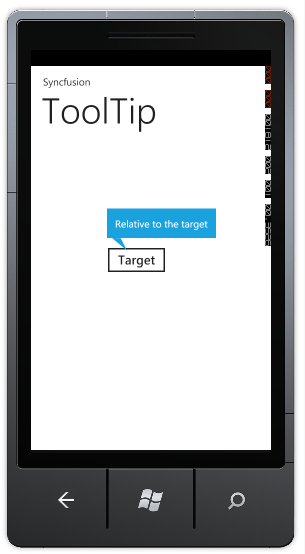
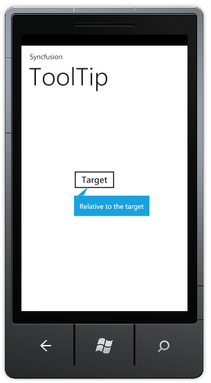

This feature enables you to specify the position of the ToolTip. You can place the tooltip on the top and at the bottom of the specified element.
Specifying the ToolTip Position
You can specify the position of the tooltip using the RelativePlacement property.
The following code illustrates how to place the tooltip on top:
|
[XAML] <syncfusion:ToolTip x:Name="tooltip" ToolTipStyle="rectangle" Background="{StaticResource PhoneAccentBrush}" RelativePlacement="Top" RelativeTo="button1" Content="Relative to the target"/> |
|
[C#] Syncfusion.Phone.Tools.Controls.ToolTip _tooltip = new Syncfusion.Phone.Tools.Controls.ToolTip() { ToolTipStyle = Syncfusion.Phone.Tools.Controls.ToolTipType.rectangle, Background = Application.Current.Resources["PhoneAccentBrush"] as SolidColorBrush, RelativePlacement = Syncfusion.Phone.Tools.Controls.Placement.Top, RelativeTo = "button1", Content = "Relative to the target" };
|

Figure 108: Tooltip place on Top
The following code illustrates how to place the tooltip at the bottom:
|
<syncfusion:ToolTip x:Name="tooltip" ToolTipStyle="rectangle" Background="{StaticResource PhoneAccentBrush}" RelativePlacement="Bottom" RelativeTo="button1" Content="Relative to the target"/> |
|
[C#] Syncfusion.Phone.Tools.Controls.ToolTip _tooltip = new Syncfusion.Phone.Tools.Controls.ToolTip() { ToolTipStyle = Syncfusion.Phone.Tools.Controls.ToolTipType.rectangle, Background = Application.Current.Resources["PhoneAccentBrush"] as SolidColorBrush, RelativePlacement = Syncfusion.Phone.Tools.Controls.Placement.Bottom, RelativeTo = "button1", Content = "Relative to the target" };
|

Figure 109: Tooltip is placed at the buttom.
Note: Default Position of the ToolTip is bottom.